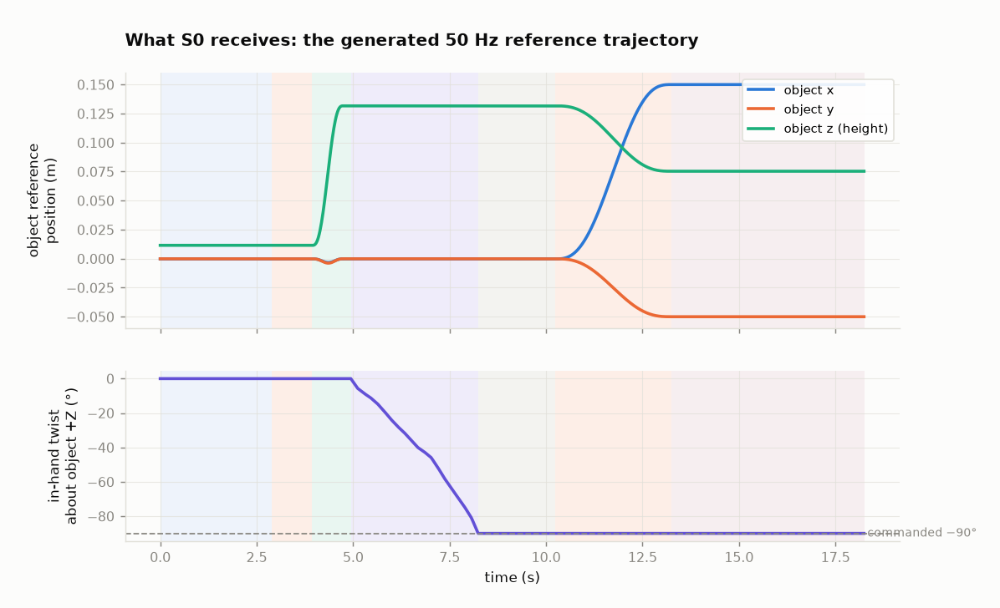
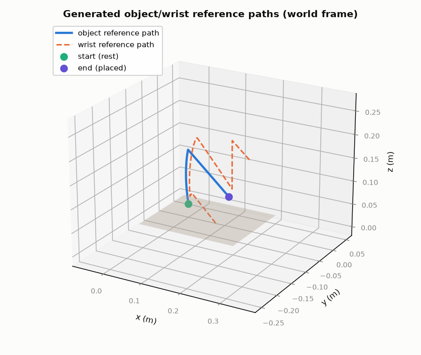

← dashboard · skills · framework
A concrete trace of the pipeline for the hammer — the numbers and plots below are produced by running the real framework, so this is exactly what S0 receives.
skills = [
acquire(lowest_z=0.12), # grasp + lift to 12 cm
spin(angle_deg=-90, quarter_s=3.3), # turn -90 deg in hand
place_release(at_xy=[0.15, -0.05]), # set it down 15 cm away, let go, retreat
]
prog = program("hammerS_local_mocap", skills,
prompt="pick, turn -90 in hand, set down")
ref = S0().generate("hammerS_local_mocap", prog, scene)
| skill → verb | parameters (S2 chose) | IR ops it emits |
|---|---|---|
pick | {'lowest_z': 0.12, 'palm_normal_z': None} | grasp → lift |
spin | {'angle_deg': -90, 'quarter_s': 3.3} | rotate_in_hand → wait |
place | {'at_xy': [0.15, -0.05]} | place → release → retreat → wait |
8 steps, the p1_task_program_v1 fragment the compiler reads:
[
{
"op": "grasp"
},
{
"op": "lift",
"lowest_z_m": 0.12
},
{
"op": "rotate_in_hand",
"angle_deg": -90.0,
"quarter_s": 3.3
},
{
"op": "wait",
"duration_s": 2.0
},
{
"op": "place",
"duration_s": 3.0,
"at": {
"frame": "world",
"xy": [
0.15,
-0.05
]
}
},
{
"op": "release",
"duration_s": 1.0
},
{
"op": "retreat",
"up_first_m": 0.1,
"duration_s": 3.0
},
{
"op": "wait",
"duration_s": 1.0
}
]
Four 50 Hz arrays, 913 frames (18.3 s):
wrist_pose_w (913, 7); object_pose_w (913, 7); reference_qpos (913, 20); link_pos_w (913, 21, 3). The frozen S0 tracks the object reference with its fingers; the wrist follows
the wrist reference. (reference_qpos/link_pos_w are placeholders in Object-only
mode — S0 decides the fingers.)

Each phase band is one skill's contribution: grasp/lift (acquire) raises object z from 1 cm to 12 cm; rotate (spin) ramps the in-hand twist to the commanded −90°; place/release/retreat (place_release) lowers z back down at the new xy. The object x/y shift during place is the 15 cm relocation.

The blue object path and orange wrist path in the world frame: up off the table, held and turned, then down at the offset target. This is the geometry the skills generated from three parameter calls.
Generated by harness/make_example.py from a live framework run.